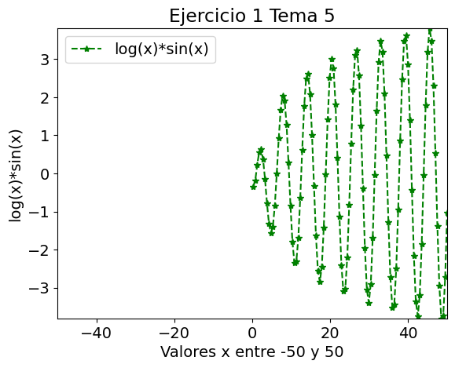
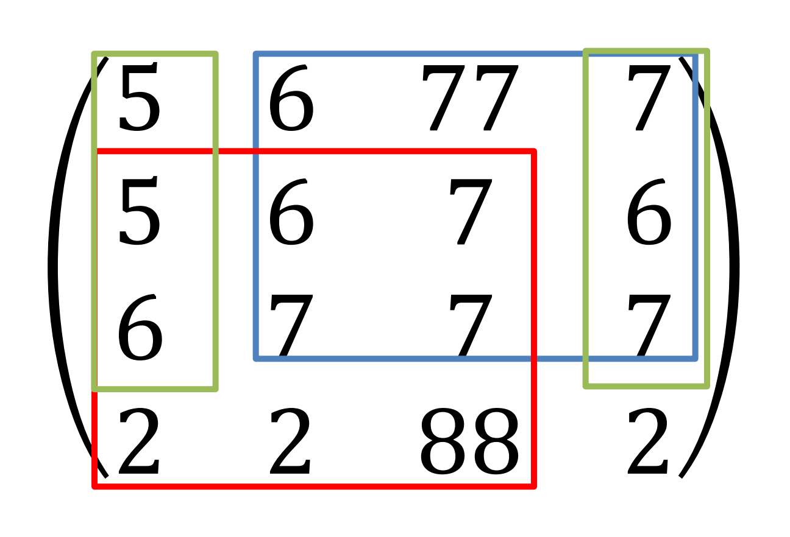
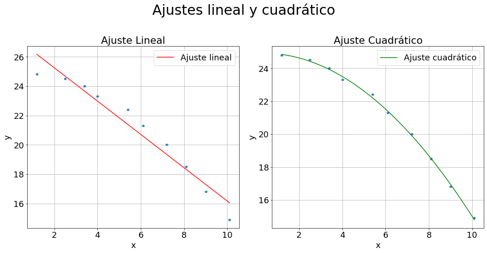
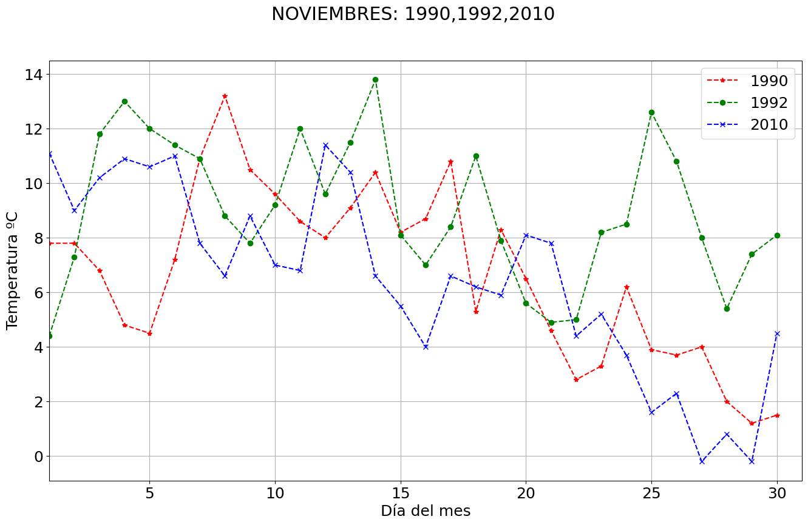
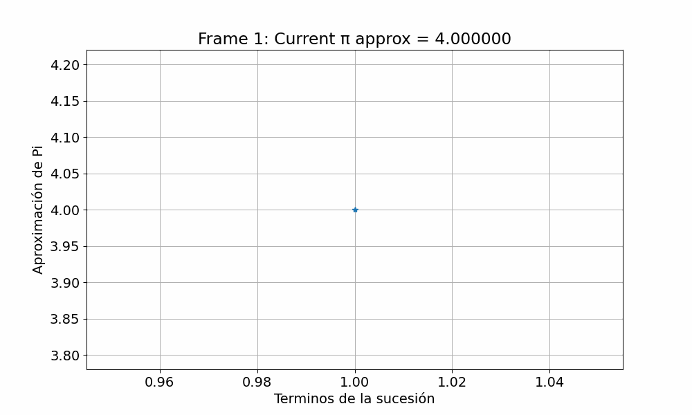
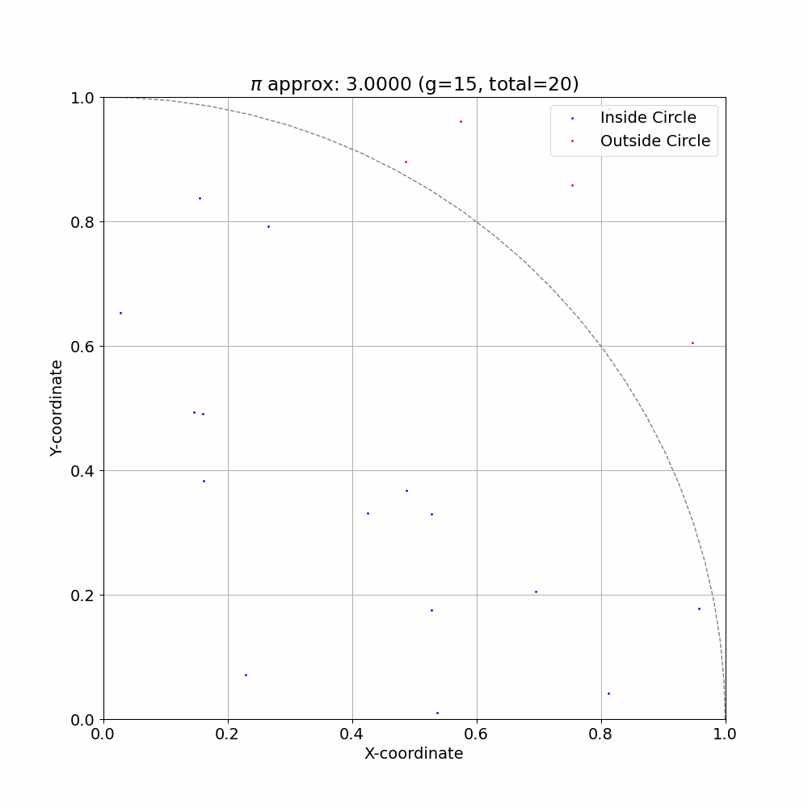

Tema 5 — Numpy y Matplotlib (Hoja de ejercicios)#
Objetivos de aprendizaje
Trabajar con arrays N-dimensionales de Numpy (
ndarray): creación, indexación y operaciones.Aplicar funciones matemáticas de Numpy de forma vectorizada sobre arrays.
Realizar operaciones matriciales (submatrices, productos, exponenciales elemento a elemento).
Representar datos con Matplotlib: títulos, etiquetas, leyendas, estilos y
subplot.Cargar y analizar datos desde ficheros CSV con
np.genfromtxt(más adelantes veremospandaspara análisis de datos).Visualizar la convergencia de métodos numéricos (serie de Gregory-Leibniz, Monte Carlo) para el cálculo de π.
Requisitos previos
Python 3.10+ y VSCode con la extensión de Python.
Haber trabajado con tipos básicos, listas y bucles en Python.
Tener instaladas las bibliotecas
numpyymatplotlib(por ejemplo mediantepip install numpy matplotlib).Conocer los ejercicios del Tema 3 sobre el cálculo de π (serie de Gregory-Leibniz y método de Monte Carlo).
Contenidos del tema
Creación de arrays con
np.array,np.linspacey lectura de datos connp.genfromtxt.Indexación, slicing y selección de submatrices; funciones agregadas (
np.max,np.min,np.exp, …).Ajuste de datos con
np.polyfity evaluación connp.polyval.Representación de datos con Matplotlib:
plot,scatter, estilos, leyendas ysubplot.Integración de Numpy y Matplotlib para analizar datos científicos (meteorología, métodos numéricos, etc.).
Enunciados básicos#
1. Arrays, funciones y representación con Matplotlib#
Enunciado.
Define un array de 200 elementos entre los valores -50 y 50 utilizando np.linspace.
Calcula el valor de la función
{kind=link}

Fig. 11 Plot resultante#
para todos los valores del array. Posteriormente:
Representa dichos valores con un
plot.Observa qué ocurre con los valores tras el cálculo (especialmente para los valores de
xen los quelog(x)no está definido).Responde: ¿se representan correctamente todos los puntos con
plot? ¿Aparecen huecos o advertencias?Da título a la gráfica, añade etiquetas a los ejes, limita el eje x a los valores mínimo y máximo del array, añade una leyenda y representa los valores con asteriscos verdes y línea discontinua.
Recordatorio
Importaciones típicas:
import numpy as np import matplotlib.pyplot as plt
Generar 200 puntos entre -50 y 50:
x = np.linspace(-50, 50, 200)La función logarítmica de Numpy es
np.log. Para valores negativos devolveránany puede lanzar warnings.Estilos de representación, por ejemplo:
plt.plot(x, y, 'g*--', label="f(x) = log(x)*sin(x)")No olvides
plt.title,plt.xlabel,plt.ylabel,plt.xlimyplt.legend().
2. Submatrices y operaciones matriciales con Numpy#
Enunciado.
Define en Python la siguiente matriz \(A\) (4×4) utilizando Numpy:
{kind=link}

Fig. 12 Matriz A#
Trabajando con Numpy:
Obtén la submatriz en verde indicada en el enunciado original (ver figura de la matriz coloreada).
Obtén la submatriz en rojo.
Obtén la submatriz en azul.
Calcula el resultado de multiplicar la matriz azul por la matriz verde (en ese orden, usando producto matricial).
Obtén la exponencial de los elementos de la matriz roja (función \(e^x\) elemento a elemento).
Calcula el valor mayor de la primera fila de \(A\) y el valor menor de la tercera columna de \(A\).
Recordatorio
Por convención, las importaciones suelen ser:
import numpy as np
Para definir la matriz:
A = np.array([ [5, 6, 7, 7], [5, 6, 7, 6], [6, 7, 7, 7], [2, 2, 8, 2], ])
En Numpy, la indexación comienza en 0.
En Numpy, el slicing se hace con
matriz[inicio:fin_sin_incluir](el índicefinno se incluye). Ejemplo:submatriz_roja = A[1:4, 0:3] # Filas 1 a 3, columnas 0 a 2
El slicing no permite seleccionar filas y columnas no consecutivas. (La submatriz verde no puede obtenerse con slicing).
No obstante, para una indexación similar a MATLAB (seleccionar filas y columnas concretas aunque sean no consecutivas) se recomienda usar:
sub = A[np.ix_([filas], [columnas])]
Por ejemplo, filas 0 y 2, columnas 1 y 2:
A[np.ix_([0, 2], [1, 2])]Producto matricial:
C = A @ Bonp.matmul(A, B).Exponencial elemento a elemento:
np.exp(matriz_roja).Primera fila:
A[0, :]; tercera columna:A[:, 2].
Usanp.maxynp.minsegún convenga.
3. Ajuste lineal y cuadrático con np.polyfit#
Enunciado.
Dispones de los siguientes valores experimentales:
Variable independiente \(x\):
Variable dependiente \(y\):
Se pide:
Ajusta los datos a un modelo lineal \(y = m x + b\) utilizando
np.polyfitcon grado 1.Ajusta los mismos datos a un modelo cuadrático \(y = ax^2 + bx + c\) utilizando
np.polyfitcon grado 2.Representa los datos y los ajustes usando
subploten dos subplots diferentes, de forma que la figura resultante sea similar a la mostrada en la hoja de enunciados:Subplot 1: datos experimentales y recta del modelo lineal.
Subplot 2: datos experimentales y curva del modelo cuadrático.
Muestra por pantalla los coeficientes del modelo lineal y del modelo cuadrático.
{kind=link}

Fig. 13 Representación de ajustes lineal y cuadrático#
Recordatorio
Arrays de Numpy para los datos:
x = np.array([1.2, 2.5, 3.4, 4.0, 5.4, 6.1, 7.2, 8.1, 9.0, 10.1]) y = np.array([24.8, 24.5, 24.0, 23.3, 22.4, 21.3, 20.0, 18.5, 16.8, 14.9])
Ajuste lineal:
coef_lin = np.polyfit(x, y, 1) # [m, b]
Ajuste cuadrático:
coef_quad = np.polyfit(x, y, 2) # [a, b, c]
Para evaluar los modelos:
y_lin = np.polyval(coef_lin, x) y_quad = np.polyval(coef_quad, x)
Para crear dos subplots:
fig, (ax1, ax2) = plt.subplots(1, 2)
Luego usa
ax1.plot(...),ax2.plot(...), añade títulos, etiquetas y leyendas en cada subplot.
4. Análisis de datos meteorológicos con np.genfromtxt#
Enunciado.
Se dispone de un fichero estacion_2867.csv (en el mismo directorio que tu programa) con información meteorológica de Matacán. Cada fila del fichero contiene:
Carga los datos en una matriz Numpy llamada
matrix_datoscon:matrix_datos = np.genfromtxt('estacion_2867.csv', delimiter=',')
Usando las funciones disponibles en Numpy, calcula y muestra por pantalla:
La temperatura media de noviembre de 1990.
La temperatura máxima de noviembre de 1992.
La temperatura mínima del año 2010 (en cualquier mes).
Inicialmente, recorre las filas de la matriz con un bucle y almacena aquellos registros que cumplan las condiciones anteriores. Posteriormente, intenta resolver lo mismo utilizando las funciones de Numpy (boolean masks,
np.mean,np.max,np.min…).Representa en una misma gráfica las temperaturas de los 3 años anteriores (1990, 1992 y 2010) del mes de noviembre (por ejemplo, la temperatura media) usando colores y marcadores distintos para cada año.
El eje de las abscisas será el día del mes.
Añade leyenda, título y etiquetas de ejes.
{kind=link}

Fig. 14 Temperaturas de noviembre de 1990, 1992 y 2010 en la estación de Matacán (2867)#
Recordatorio
Si el fichero tiene cabecera, puedes necesitar
skip_header=1ennp.genfromtxt. Revisa el fichero para comprobarlo.Recuerda que las columnas se indexan como:
col 0 -> Año col 1 -> Mes col 2 -> Día col 3 -> TempMedia col 4 -> TempMaxima col 5 -> TempMinima
Máscaras booleanas en Numpy, permiten filtrar filas que cumplen condiciones. Por ejemplo, para obtener los datos de noviembre de 1990:
mask_nov_1990 = (matrix_datos[:, 0] == 1990) & (matrix_datos[:, 1] == 11) datos_nov_1990 = matrix_datos[mask_nov_1990] temp_media_nov_1990 = np.mean(datos_nov_1990[:, 3])
Para la representación, puedes obtener el vector de días con
datos_nov_1990[:, 2]y las temperaturas correspondientes con la columna que elijas.
Enunciados adicionales#
5. Visualización de la serie de Gregory-Leibniz para π#
Enunciado.
En el Tema 3 implementaste un programa para calcular aproximaciones de π utilizando la serie de Gregory-Leibniz:
Ahora, utilizando Numpy y Matplotlib:
Calcula un array con las aproximaciones parciales de π para distintos valores de \(N\) (por ejemplo, desde 1 hasta un valor suficientemente grande).
Representa en una gráfica la evolución de la aproximación de π en función de \(N\) (en el eje x, el número de términos; en el eje y, el valor aproximado de π).
Añade una línea horizontal con el valor real de
np.pipara comparar visualmente la convergencia.Etiqueta los ejes, añade título y leyenda.
{kind=link}

Fig. 15 Aproximación de π mediante la serie de Gregory-Leibniz#
Recordatorio
Puedes generar una secuencia de Ns con
np.arange(1, N_max+1).Para crear las aproximaciones, o bien reutilizas tu código del Tema 3 adaptándolo a Numpy, o bien usas bucles y vas almacenando cada aproximación en una lista/array.
Para la línea horizontal:
plt.axhline(np.pi, linestyle='--', label='π (np.pi)')
Es interesante usar escala logarítmica en el eje x si quieres apreciar mejor la convergencia para grandes N (
plt.xscale('log')), aunque no es obligatorio.
6. Visualización del método de Monte Carlo para π#
Enunciado.
En el Tema 3 resolviste el cálculo de π mediante el método de Monte Carlo, generando puntos aleatorios en el cuadrado \([-1, 1] \times [-1, 1]\) y contando cuántos caen dentro del círculo de radio 1 centrado en el origen.
En este ejercicio, usando Numpy y Matplotlib:
Reutiliza o escribe una función que genere N puntos aleatorios en el cuadrado \([-1, 1] \times [-1, 1]\).
Determina qué puntos caen dentro del círculo \(x^2 + y^2 \leq 1\) y cuáles quedan fuera.
Representa gráficamente:
La circunferencia de radio 1 centrada en el origen.
Los puntos que caen dentro del círculo en color azul.
Los puntos que caen fuera del círculo en color rojo.
Calcula el valor aproximado de π con el método de Monte Carlo y muéstralo en el título de la figura.
Asegúrate de que los ejes x e y tengan la misma escala para que el círculo parezca realmente un círculo.
{kind=link}

Fig. 16 Aproximación de π mediante Monte Carlo#
Recordatorio
Generación de puntos aleatorios con Numpy:
N = 5000 x = np.random.uniform(-1, 1, N) y = np.random.uniform(-1, 1, N)
Condición de pertenencia al círculo:
dentro = x**2 + y**2 <= 1
Estimación de π:
pi_est = 4 * np.sum(dentro) / N
Para representar la circunferencia, puedes generar puntos en el círculo unitario:
theta = np.linspace(0, 2*np.pi, 400) plt.plot(np.cos(theta), np.sin(theta))
Asegura la misma escala en ambos ejes:
plt.axis('equal')
Recomendaciones generales#
Intenta vectorizar los cálculos usando Numpy en lugar de usar bucles siempre que sea posible.
Etiqueta siempre los ejes, añade títulos descriptivos y leyendas claras.
Ajusta límites de los ejes (
plt.xlim,plt.ylim) para que la información se vea bien.Para depurar, puedes imprimir dimensiones (
.shape) de los arrays y comprobar que las operaciones matriciales tienen sentido.